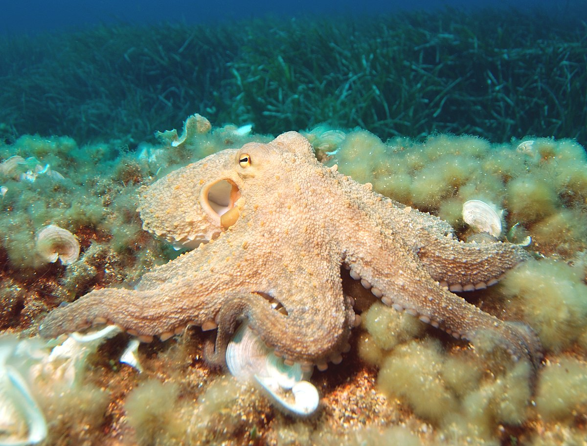
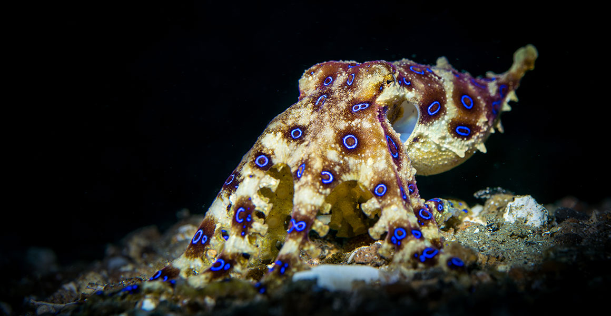

Octopuses are sea animals famous for their rounded bodies, bulging eyes, and eight long arms. They live in all the world's oceans but are especially abundant in warm, tropical waters. Octopuses, like their cousin, the squid, are often considered monsters of the deep, though some species, or types, occupy relatively shallow waters.
Cephalopods have something called chromatophores under their skin. Using a combination of pigment, nerves and muscles, the animal manipulates their chromatophores to change their external appearance. According to Wikipedia, chromatophores change based on “neuronal activation". Once the animal's brain gives a signal, the color change literally ripples through the animal's body. Chameleons, on the other hand, change color gradually. It can take up to several minutes for their transformation complete. Maybe we ought to call chameleons jungle octopuses, or dirt squids.
Octopuses usually hunt at night for more effective attacks. They have access to a formidable array weapons which nature has provided them to attack as well as to defend themselves with. The powerful tentacles they posses, provided with suckers, can cling and grab to most of their ocean's rivals. Octopuses also have extremelly hard beaks on the base of their body which they use to eat and penetrate hard shells from animals like crustaceans. Some species are even born with poisounous glands, that produce potent venoms, that can kill a human in seconds, like the blue-ringed octopus.
Octopuses eat a wide variety of animals from small crustaceans to even sharks (if the occasion arises), but they mostly eat:
So what makes octopuses so smart?
Without a shell, octopuses are vulnerable, and always try to remain hidden in a shelter such as a cavity or the space beneath a rock. Some species
maintain their shelter by removing sand and adding pebbles and shells. This is the case for the coconut octopus, which has been
observed carrying coconut shells around to hide within in case of danger.
They are also even able to open jars, although this is not their most remarkable ability. This is mostly a matter of dexterity and gripping, and octopuses are quite slow when executing this task.